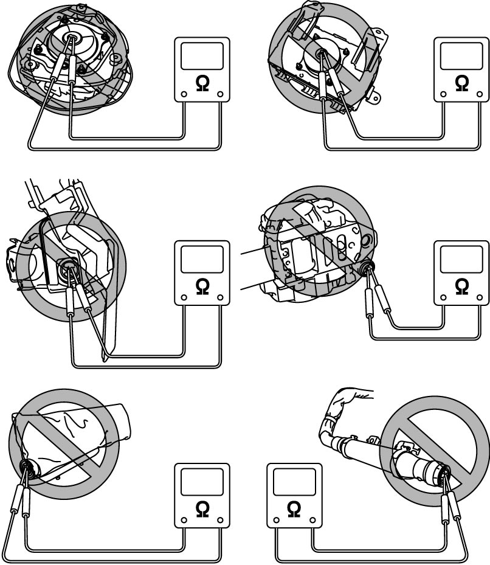
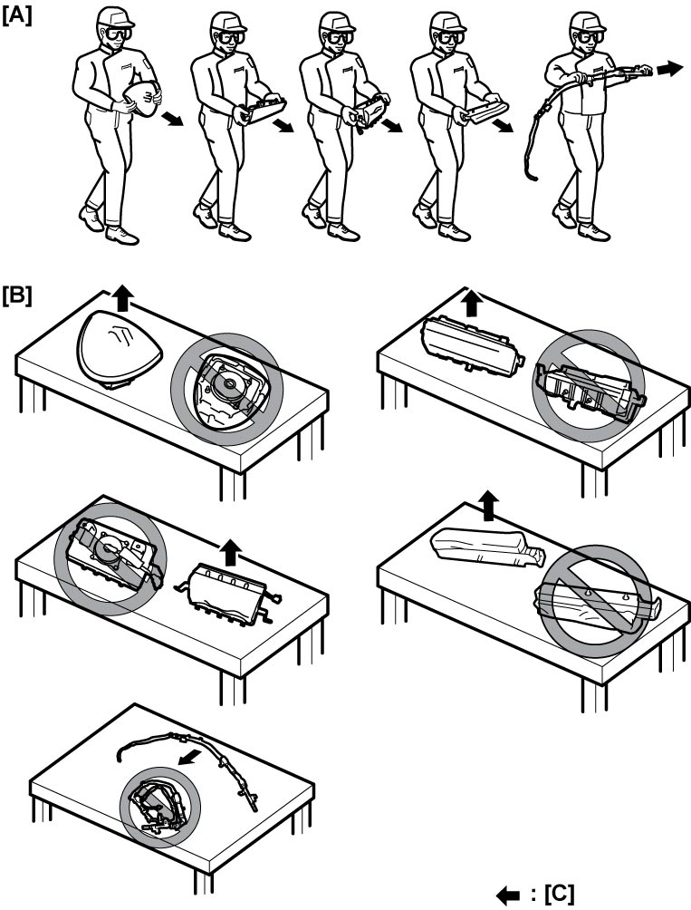

00
| Warning for Vehicle Equipped with Supplemental Restraint (Air Bag) System |
Failure to follow the proper procedures when servicing (removing, reinstalling and checking) any of air bag system components could result in personal injury due to accidental air bag activation, damage to components, or non-activation of the air bag system in the event of a collision. 
When servicing any of the air bag components, take the following precautions:
•Follow the procedures described in Precautions for Air Bag System Service.
•If the air bag system and another vehicle system both require repair, repairing the other system prior to the air bag system may increase the chance of unintended activation of the air bag system and possible personal injury. SUZUKI recommends that the air bag system be repaired first.
•Modifying any parts supporting or surrounding the air bag system components can adversely affect the performance of the system and lead to personal injury.
Do not modify the steering wheel, dashboard or any other parts that are near the air bag system components.
•High temperatures over 93 °C (200 °F) may activate the air bag system or damage its components.
Before performing paint baking or other operations that involve high temperatures, remove the air bag system components from the vehicle and place them in an area away from the area where such operations are to be performed.
•If the air bag system and another vehicle system both require repair, repairing the other system prior to the air bag system may increase the chance of unintended activation of the air bag system and possible personal injury. SUZUKI recommends that the air bag system be repaired first.
•Modifying any parts supporting or surrounding the air bag system components can adversely affect the performance of the system and lead to personal injury.
Do not modify the steering wheel, dashboard or any other parts that are near the air bag system components.
•High temperatures over 93 °C (200 °F) may activate the air bag system or damage its components.
Before performing paint baking or other operations that involve high temperatures, remove the air bag system components from the vehicle and place them in an area away from the area where such operations are to be performed.
Diagnosis
•When troubleshooting the air bag system, follow Air Bag Diagnostic System Check. Bypassing these procedures may result in extended diagnostic time, incorrect diagnosis, and incorrect replacement of parts.
•Never use electrical test equipment other than that specified.
•Never use electrical test equipment other than that specified.
Measuring the resistance of any air bag (inflator) module or any seat belt pretensioner with a tester is dangerous, as the electric current from the tester may trigger the air bag or pretensioner.
Never measure the resistance of an air bag (inflator) module or seat belt pretensioner.

 "Expand image")
Servicing and Handling
Air Bag (Inflator) Module
Failure to take proper precautions when servicing and handling air bag (inflator) modules can cause accidental triggering of the inflator, which can result in severe personal injury.
•Always disconnect the “A/B” fuse and air bag (inflator) modules from the initiator circuit when instructed in any service procedure.
•Handle and store a live (non-deployed) air bag (inflator) module in a dry place where the ambient temperature is below 65 °C (150 °F), and there are no electric noise sources.
•Always carry a live air bag (inflator) module with the air bag’s opening pointing away from you. Doing so will help reduce the chance of injury in case of an accidental deployment of the air bag.
•Never carry a live air bag (inflator) module by its wires or connector.
•Always place a live air bag (inflator) module on a bench or other surface with the bag side facing up to keep it away from the surface.
•Do not place anything including another air bag (inflator) module on top of an air bag (inflator) module. Allowing for a free space above the module is essential to minimize the risk of personal injury in the event of accidental deployment of the air bag (inflator) module.
•Never dispose of any live air bag (inflator) module. Before disposing of any live air bag (inflator) module, deploy it according to the applicable procedure described in Air Bag (Inflator) Module and Seat Belt Pretensioner Disposal.
•The air bag (inflator) module is very hot immediately after deployment. Wait for at least half an hour to let it cool down before proceeding to the next step.
•After deployment of an air bag (inflator) module, there will be a powdery substance remaining on its surface. This substance consists primarily of cornstarch that is used to lubricate the bag as it inflates and by-products of a chemical reaction. Like with many other service procedures, wear gloves and safety glasses to protect the skin and eyes when handling a deployed air bag (inflator) module.
•Handle and store a live (non-deployed) air bag (inflator) module in a dry place where the ambient temperature is below 65 °C (150 °F), and there are no electric noise sources.
•Always carry a live air bag (inflator) module with the air bag’s opening pointing away from you. Doing so will help reduce the chance of injury in case of an accidental deployment of the air bag.
•Never carry a live air bag (inflator) module by its wires or connector.
•Always place a live air bag (inflator) module on a bench or other surface with the bag side facing up to keep it away from the surface.
•Do not place anything including another air bag (inflator) module on top of an air bag (inflator) module. Allowing for a free space above the module is essential to minimize the risk of personal injury in the event of accidental deployment of the air bag (inflator) module.
•Never dispose of any live air bag (inflator) module. Before disposing of any live air bag (inflator) module, deploy it according to the applicable procedure described in Air Bag (Inflator) Module and Seat Belt Pretensioner Disposal.
•The air bag (inflator) module is very hot immediately after deployment. Wait for at least half an hour to let it cool down before proceeding to the next step.
•After deployment of an air bag (inflator) module, there will be a powdery substance remaining on its surface. This substance consists primarily of cornstarch that is used to lubricate the bag as it inflates and by-products of a chemical reaction. Like with many other service procedures, wear gloves and safety glasses to protect the skin and eyes when handling a deployed air bag (inflator) module.

 "Expand image")
| [A]: | Always carry air bag (inflator) module with trim cover (air bag opening) away from body. |
| [B]: | Always place air bag (inflator) module on workbench with trim cover (air bag opening) up, away from loose objects. |
| [C]: | Air bag deployment direction |
SDM
Failure to take proper precautions when servicing and handling the Sensing and Diagnostic Module (SDM) can cause accidental triggering of the inflator, which can result in severe personal injury.
•Always disconnect the “A/B” fuse and air bag (inflator) modules from the initiator circuit when instructed in any service procedure.
•Handle and store an SDM in a dry place where the ambient temperature is below 65 °C (150 °F), and there are no electric noise sources.
•Handle the SDM very carefully during all service procedures. Never strike it with another object or shake it excessively.
•Never power the air bag system when the SDM is not rigidly attached to the vehicle. Unless all fasteners of the SDM mounting bracket are firmly tightened and the arrow points toward the front of the vehicle, the SDM could be accidentally activated when the air bag system is powered, possibly causing the air bags to deploy.
•Handle and store an SDM in a dry place where the ambient temperature is below 65 °C (150 °F), and there are no electric noise sources.
•Handle the SDM very carefully during all service procedures. Never strike it with another object or shake it excessively.
•Never power the air bag system when the SDM is not rigidly attached to the vehicle. Unless all fasteners of the SDM mounting bracket are firmly tightened and the arrow points toward the front of the vehicle, the SDM could be accidentally activated when the air bag system is powered, possibly causing the air bags to deploy.
Seat Belt Pretensioner
Failure to take proper precautions when servicing and handling the seat belt pretensioners can cause accidental triggering of the pretensioners, which can result in severe personal injury.
•Always disconnect the “A/B” fuse and seat belt pretensioners from the initiator circuit when instructed in any service procedure.
•Handle and store a live (non-activated) seat belt pretensioner in a dry place where the ambient temperature is below 65 °C (150 °F), and there are no electric noise sources.
•Never carry a live pretensioner by its wires or connector.
•Never put anything on top of a live pretensioner placed on a workbench or similar surface. Any objects on top of the pretensioner can increase the risk of personal injury in the event of accidental activation.
•Never dispose of a live pretensioner. Before disposing of a live pretensioner, activate it according to the applicable procedure described in Air Bag (Inflator) Module and Seat Belt Pretensioner Disposal.
•The seat belt pretensioner is very hot immediately after activation. Wait for at least half an hour to let it cool down before proceeding to the next step.
•Like with many other service procedures, wear gloves and safety glasses when handling pretensioners to protect the skin and eyes.
•Handle and store a live (non-activated) seat belt pretensioner in a dry place where the ambient temperature is below 65 °C (150 °F), and there are no electric noise sources.
•Never carry a live pretensioner by its wires or connector.
•Never put anything on top of a live pretensioner placed on a workbench or similar surface. Any objects on top of the pretensioner can increase the risk of personal injury in the event of accidental activation.
•Never dispose of a live pretensioner. Before disposing of a live pretensioner, activate it according to the applicable procedure described in Air Bag (Inflator) Module and Seat Belt Pretensioner Disposal.
•The seat belt pretensioner is very hot immediately after activation. Wait for at least half an hour to let it cool down before proceeding to the next step.
•Like with many other service procedures, wear gloves and safety glasses when handling pretensioners to protect the skin and eyes.
NOTICE:
Failure to take proper precautions when servicing the air bag and seat belt pretensioner systems may cause faulty operation or damage to components of the systems.
•After any accident, even if it was not severe enough to cause deployment of the air bags, check the air bag system and other related components according to the instructions under Repair and Inspection Required after Accident.
•If any air bag system component is impacted during service on other components, remove the air bag system component before continuing the service.
•Carefully handle the following components not to drop or otherwise impact them: the air bag (inflator) modules; the seat belt pretensioners; the forward and side sensors; and the SDM. If any of these components receives an impact, never disassemble and repair it but replace it with new one.
•If any of the following components gets contaminated with such materials as grease, cleaning solvents, oil or water, wipe it clean with a dry cloth: the air bag (inflator) modules and the seat belt pretensioners.
•The air bag harness is part of the main harness, instrument panel harness, floor harness and seat harness. For easy identification, the connector-side of each air bag harness wire is covered with a yellow protection tube and each connector is yellow in color. Handle the air bag harness wires and connectors very carefully.
•When an open wire or damaged connector/ terminal is found in the air bag harness, replace the entire harness rather than replacing only the damaged wire or connector/terminal.
•Apply power to the air bag system only when all its components are connected or a diagnostic procedure requires it. Doing otherwise will set a DTC.
•Never use air bag system components from another vehicle.
•When doing any electric welding, temporarily disable the air bag system referring to Disabling Air Bag System.
•Never expose the air bag system components to extremely hot air (i.e., placing the vehicle in an oven to dry it after painting).
•WARNING / CAUTION labels are affixed to every air bag system component. Follow the instructions provided on them.
•After completing repairs on any air bag system component, perform the procedures in Air Bag Diagnostic System Check.
•If any air bag system component is impacted during service on other components, remove the air bag system component before continuing the service.
•Carefully handle the following components not to drop or otherwise impact them: the air bag (inflator) modules; the seat belt pretensioners; the forward and side sensors; and the SDM. If any of these components receives an impact, never disassemble and repair it but replace it with new one.
•If any of the following components gets contaminated with such materials as grease, cleaning solvents, oil or water, wipe it clean with a dry cloth: the air bag (inflator) modules and the seat belt pretensioners.
•The air bag harness is part of the main harness, instrument panel harness, floor harness and seat harness. For easy identification, the connector-side of each air bag harness wire is covered with a yellow protection tube and each connector is yellow in color. Handle the air bag harness wires and connectors very carefully.
•When an open wire or damaged connector/ terminal is found in the air bag harness, replace the entire harness rather than replacing only the damaged wire or connector/terminal.
•Apply power to the air bag system only when all its components are connected or a diagnostic procedure requires it. Doing otherwise will set a DTC.
•Never use air bag system components from another vehicle.
•When doing any electric welding, temporarily disable the air bag system referring to Disabling Air Bag System.
•Never expose the air bag system components to extremely hot air (i.e., placing the vehicle in an oven to dry it after painting).
•WARNING / CAUTION labels are affixed to every air bag system component. Follow the instructions provided on them.
•After completing repairs on any air bag system component, perform the procedures in Air Bag Diagnostic System Check.